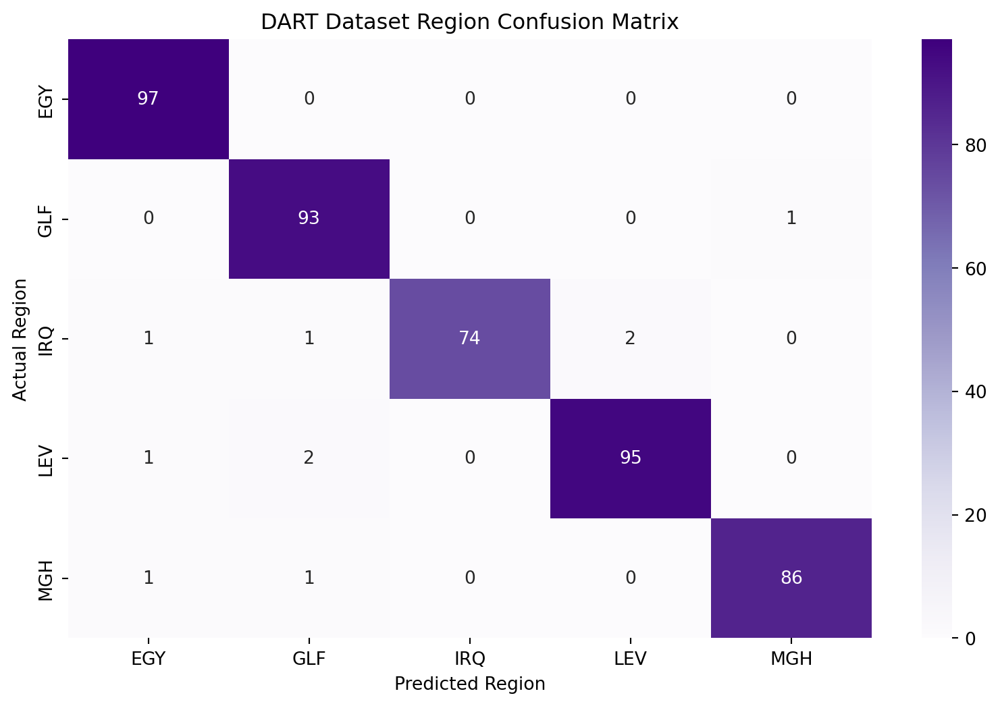

Code
# Needed Packages
# pip install transformers sentencepiece torch os subprocess pathlib# Needed Packages
# pip install transformers sentencepiece torch os subprocess pathlibimport os
import subprocess
from pathlib import Path
def find_repo_root(repo_name="CS329"):
try:
root = subprocess.check_output(
["git", "rev-parse", "--show-toplevel"],
stderr=subprocess.DEVNULL,
text=True
).strip()
root = Path(root)
if root.name == repo_name:
return root
except Exception:
pass
cwd = Path.cwd().resolve()
for p in [cwd, *cwd.parents]:
if p.name == repo_name and (p / ".git").exists():
return p
candidate = p / repo_name
if candidate.exists() and (candidate / ".git").exists():
return candidate
raise FileNotFoundError(f"Could not find repo '{repo_name}'")
repo_root = find_repo_root("CS329")
os.chdir(repo_root)
print("Using repo:", repo_root)Using repo: C:\Users\Abasu\Documents\GitHub\CS329from Dialect_Detector import detect_dialectOverall Test Accuracy: 0.9780
Region-Level Report:
precision recall f1-score support
EGY 0.97 1.00 0.98 97
GLF 0.96 0.99 0.97 94
IRQ 1.00 0.95 0.97 78
LEV 0.98 0.97 0.97 98
MGH 0.99 0.98 0.98 88
accuracy 0.98 455
macro avg 0.98 0.98 0.98 455
weighted avg 0.98 0.98 0.98 455

# Load the OPUS-MT Arabic→English Model
from transformers import MarianMTModel, MarianTokenizer
import torch
MODEL_NAME = "Helsinki-NLP/opus-mt-ar-en"
tokenizer = MarianTokenizer.from_pretrained(MODEL_NAME)
model = MarianMTModel.from_pretrained(MODEL_NAME)
device = "cuda" if torch.cuda.is_available() else "cpu"
model.to(device)
C:\Users\Abasu\AppData\Local\Python\pythoncore-3.14-64\Lib\site-packages\tqdm\auto.py:21: TqdmWarning: IProgress not found. Please update jupyter and ipywidgets. See https://ipywidgets.readthedocs.io/en/stable/user_install.html
from .autonotebook import tqdm as notebook_tqdm
Warning: You are sending unauthenticated requests to the HF Hub. Please set a HF_TOKEN to enable higher rate limits and faster downloads.
C:\Users\Abasu\AppData\Local\Python\pythoncore-3.14-64\Lib\site-packages\transformers\models\marian\tokenization_marian.py:176: UserWarning: Recommended: pip install sacremoses.
warnings.warn("Recommended: pip install sacremoses.")
Loading weights: 0%| | 0/258 [00:00<?, ?it/s]
Loading weights: 100%|██████████| 258/258 [00:00<00:00, 36985.80it/s]MarianMTModel(
(model): MarianModel(
(shared): Embedding(62834, 512, padding_idx=62833)
(encoder): MarianEncoder(
(embed_tokens): Embedding(62834, 512, padding_idx=62833)
(embed_positions): MarianSinusoidalPositionalEmbedding(512, 512)
(layers): ModuleList(
(0-5): 6 x MarianEncoderLayer(
(self_attn): MarianAttention(
(k_proj): Linear(in_features=512, out_features=512, bias=True)
(v_proj): Linear(in_features=512, out_features=512, bias=True)
(q_proj): Linear(in_features=512, out_features=512, bias=True)
(out_proj): Linear(in_features=512, out_features=512, bias=True)
)
(self_attn_layer_norm): LayerNorm((512,), eps=1e-05, elementwise_affine=True)
(activation_fn): SiLU()
(fc1): Linear(in_features=512, out_features=2048, bias=True)
(fc2): Linear(in_features=2048, out_features=512, bias=True)
(final_layer_norm): LayerNorm((512,), eps=1e-05, elementwise_affine=True)
)
)
)
(decoder): MarianDecoder(
(embed_tokens): Embedding(62834, 512, padding_idx=62833)
(embed_positions): MarianSinusoidalPositionalEmbedding(512, 512)
(layers): ModuleList(
(0-5): 6 x MarianDecoderLayer(
(self_attn): MarianAttention(
(k_proj): Linear(in_features=512, out_features=512, bias=True)
(v_proj): Linear(in_features=512, out_features=512, bias=True)
(q_proj): Linear(in_features=512, out_features=512, bias=True)
(out_proj): Linear(in_features=512, out_features=512, bias=True)
)
(activation_fn): SiLU()
(self_attn_layer_norm): LayerNorm((512,), eps=1e-05, elementwise_affine=True)
(encoder_attn): MarianAttention(
(k_proj): Linear(in_features=512, out_features=512, bias=True)
(v_proj): Linear(in_features=512, out_features=512, bias=True)
(q_proj): Linear(in_features=512, out_features=512, bias=True)
(out_proj): Linear(in_features=512, out_features=512, bias=True)
)
(encoder_attn_layer_norm): LayerNorm((512,), eps=1e-05, elementwise_affine=True)
(fc1): Linear(in_features=512, out_features=2048, bias=True)
(fc2): Linear(in_features=2048, out_features=512, bias=True)
(final_layer_norm): LayerNorm((512,), eps=1e-05, elementwise_affine=True)
)
)
)
)
(lm_head): Linear(in_features=512, out_features=62834, bias=False)
)# Dialect Normalization Layer (Key Innovation)
# Simple normalization dictionaries per dialect
# NEW: lets the function accept either the classifier label or our existing category name
DIALECT_LABEL_ALIASES = {
"EGY": "egyptian",
"LEV": "levantine",
"LAV": "levantine",
"GLF": "gulf"}
DIALECT_NORMALIZATION = {
"egyptian": {
"رايح": "ذاهب",
"جاي": "قادم",
"عايز": "أريد",
"عاوزه": "أريده",
"مش": "ليس",
"مش ب": "لا",
"مش تعبان": "لست متعبا",
"مش فاهم": "لا أفهم",
"فين": "أين",
"ليه": "لماذا",
"كدة": "هكذا"
},
"levantine": {
"راح": "ذهب",
"بدّي": "أريد",
"بدي": "أريد",
"مو": "ليس",
"مش": "ليس",
"إجا": "جاء",
"وين": "أين",
"ليش": "لماذا"
},
"gulf": {
"وين": "أين",
"أبغى": "أريد",
"أبي": "أريد",
"مو": "ليس",
"ليش": "لماذا"
},
"iraqi": {
"ماكو": "لا يوجد",
"مو": "ليس",
"أروح": "أذهب",
"وين": "أين",
"ليش": "لماذا"
},
"maghrebi": {
"ما": "لا",
"نبغي": "نريد",
"بغيت": "أردت",
"فين": "أين",
"علاش": "لماذا"
},
"MSA": {}
}
def normalize_dialect(text: str, dialect: str):
"""
Replace dialectal words with MSA equivalents.
Returns normalized text + list of applied rules.
"""
applied_rules = []
# NEW: map detector output labels to the dictionary category names used here
dialect = DIALECT_LABEL_ALIASES.get(dialect, dialect)
rules = DIALECT_NORMALIZATION.get(dialect, {})
# NEW: start with the original full text so multi-word phrase rules can be applied first
normalized_text = text
# NEW: apply phrase-level replacements first
for source, target in rules.items():
if " " in source and source in normalized_text:
normalized_text = normalized_text.replace(source, target)
applied_rules.append(f"{source} → {target}")
tokens = normalized_text.split()
normalized_tokens = []
for token in tokens:
if token in rules:
normalized_tokens.append(rules[token])
applied_rules.append(f"{token} → {rules[token]}")
else:
normalized_tokens.append(token)
normalized_text = " ".join(normalized_tokens)
return normalized_text, applied_rules# Translation Function (OPUS-MT Inference)
def translate_ar_to_en(text: str, max_length: int = 128):
"""
Translate Arabic text to English using OPUS-MT.
"""
inputs = tokenizer(text, return_tensors="pt", padding=True).to(device)
with torch.no_grad():
translated = model.generate(
**inputs,
max_length=max_length,
num_beams=5,
early_stopping=True
)
return tokenizer.decode(translated[0], skip_special_tokens=True)# Explanation Layer (Ambiguity Awareness)
# This is post-processing, not modeling
AMBIGUOUS_WORDS = {
"راح": ["went", "will go"],
"كان": ["was", "used to be"],
"طلع": ["went out", "turned out", "appeared"]
}
def get_ambiguity_notes(text: str):
notes = []
for word, meanings in AMBIGUOUS_WORDS.items():
if word in text:
notes.append({
"word": word,
"possible_meanings": meanings
})
return notes# Main Pipeline (This Is What You Demo)
# Assumes You already have detect_dialect(text) implemented.
def dialect_aware_translate(text: str, detect_dialect):
"""
Full pipeline:
dialect detection → normalization → translation → explanations
"""
dialect = detect_dialect(text)
normalized_text, applied_rules = normalize_dialect(text, dialect)
translation = translate_ar_to_en(normalized_text)
ambiguity_notes = get_ambiguity_notes(text)
return {
"input_text": text,
"detected_dialect": dialect,
"normalized_text": normalized_text,
"applied_normalization_rules": applied_rules,
"translation": translation,
"ambiguities": ambiguity_notes
}# Example Run (Perfect for Live Demo)
import pandas as pd
example = "أنا رايح البيت ومش تعبان"
result = dialect_aware_translate(example, detect_dialect)
display(pd.DataFrame({
"field": result.keys(),
"value": [str(v) for v in result.values()]
}))| field | value | |
|---|---|---|
| 0 | input_text | أنا رايح البيت ومش تعبان |
| 1 | detected_dialect | EGY |
| 2 | normalized_text | أنا ذاهب البيت ولست متعبا |
| 3 | applied_normalization_rules | ['مش تعبان → لست متعبا', 'رايح → ذاهب'] |
| 4 | translation | I'm going home. I'm not tired. |
| 5 | ambiguities | [] |